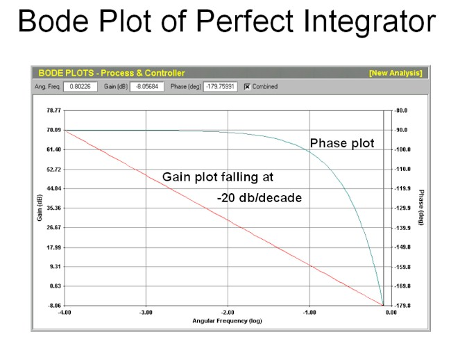
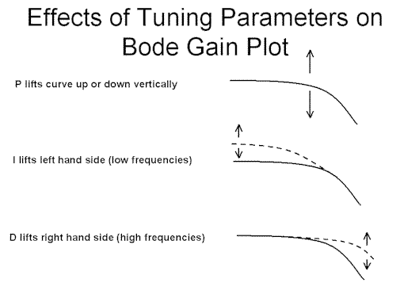
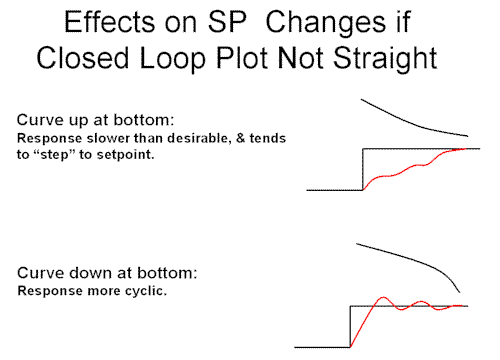
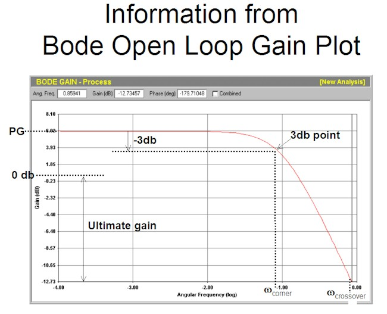

|
| [Home] [About us] [Contact us] [Training] [Optimisation services] [Protuner] |
| [Loop signatures] [Case histories] [Continuous loop performance monitoring] |
|
Loop Problem Signatures Part 2 BASICS OF FREQUENCY PLOTS - PART 2 In the previous article in this series the Bode Open Loop frequency plot was discussed, and it was shown how certain information pertaining to the dynamics of the process could be determined from it. It is now going to be shown what happens when you put a controller into automatic. When a controller is switched into automatic, the process and the controller are mathematically multiplied together. By correct tuning, one attempts to produce a resultant known as "pole cancellation", which mathematically is a perfect deadtime integrator. This is given by the formula: C(s) x P(s) = Ke-DTs/s This out of interest is the same formula as that given for a simple integrating process like a level control, which was described quite a few times in the first Loop Signature series. The Bode plot of such a process is shown in Figure 1. Note that the gain plot is now a perfectly straight line falling off at a constant 20db/decade, whilst the phase plot although pretty similar in shape to the Bode open loop plot looked at in the last article, now starts off at low frequencies at -90o phase angle. This is the closed loop, or combined, frequency plot of a perfectly tuned self-regulating process. (However it is also exactly same as the open loop plot of a simple integrating process, which will later be used to show why integrating loops behave so differently from self-regulating loops, mainly due to the fact they start out -90o out of phase).  Figure 1 This type of perfect tuning is known as "pole cancellation" tuning. There are various good reasons as to why it is the ideal type of tuning, most of which are beyond the scope of this article, but one of the main reasons is that the tuning obtained gives lower controller gain with faster integral, which results in less error amplification through the controller, and faster recovery from load upsets. The controller has three terms in it, viz. P (proportional), I (integral), and D (derivative), which can alter the open loop plot when they are multiplied with it. Figure 2 illustrates their effect as follows:
 Figure 2 Now in the case of this simple self-regulating process with a gain, a single lag and a dead-time, we saw in the previous Loop Signature article that the open loop plot finished off at the highest frequency at –20db/decade, which means that the last thing we wish to do is to use the D term, as it will mess up the slope at the end. (Purely out of interest, and as mentioned in the Part 1 Loop signature series, we can now see why the D term is not desirable in many types of processes. In fact using then D term can often make our response slower and more cyclic than desirable. It the D term should be only ever used on two particular types of process dynamics, which will be fully covered later in this series). Therefore in this case, the only term we can use to straighten the open loop plot is the I term. Therefore to tune this controller properly, one has to first set the I term to a value that will straighten the plot completely, and then we must apply the P term to raise or lower the plot to give us the desired response we wish to end up with. It will be shown in a later article how one determines the value of these terms. In many situations either with incorrect tuning or in cases as will be seen later where the plot cannot be straightened completely, we will not get ideal control. Figure 3 illustrates what sort of response we will get to setpoint changes in automatic if the plot is not straightened completely. If the plot is bent up at the bottom the response will be slower than desired and the process will tend to "cycle" upwards to setpoint, often referred to as "stepping-up to setpoint". Alternatively if the plot is bent up at the bottom the response will tend to be more cyclic than desirable around setpoint.  Figure 3 We now come to a very important part of understanding how feedback control loops operate in automatic, and when they can go unstable. The Rules of Instability For continuous cycling to occur the following two conditions must simultaneously occur:
It must be noted that unless both these conditions are met at the same time, the loop cannot go unstable (i.e. cycle continuously). If the conditions are not met, and even if the conditions are close to them, then the loop may cycle for a while or even for a long time, but with steadily decreasing amplitudes. With an understanding of the above we can now define the "ultimate cycle", which has been talked about in earlier parts of the course. The Ultimate Definition
This definition now allows us to get more information from the Bode open loop plot. In the last Loop Signature article (Number P2-6), it was described how to ascertain the process gain, the time constant, and the crossover frequency form the plot. Now as the ultimate frequency is the same as the crossover frequency the ultimate period can be calculated from the formula above. The ultimate gain can also be measured as shown in Figure 4. Remembering from the last article that the P term does not change the shape of the plot, but merely raises it up or down on the vertical axis, Then essentially if we were to put the loop into automatic with a P only controller, then we would have to raise the plot by a sufficient number of decibels so as to move up the point in the open loop plot which was at the crossover frequency to reach unity gain. Therefore referring to Figure 4, we would have to insert a P gain in the controller of 12.73 db. This equates to an absolute gain of 4.33.  Figure 4 In the next Loop Signature article we will go on to describe how one tunes with sufficient robustness (i.e. safety), and how this is measured in the Bode closed loop plot. Michael
Brown is a specialist in control loop optimisation, with many years of
experience in process control instrumentation. His main activities are
consulting, and teaching practical control loop analysis and
optimisation. He gives training courses which can be held in clients'
plants, where students can have the added benefit of practising on live
loops. His work takes him to plants all over South Africa, and also to
other countries. He can be contacted at:
|